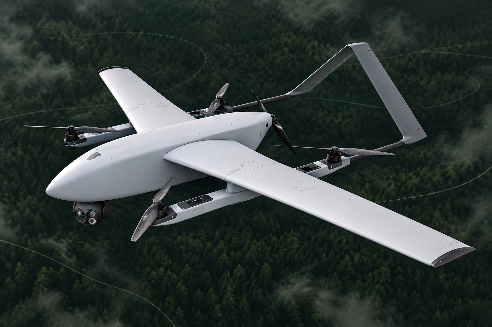

DEGLA TIER 1Vertical takeoff.
4.4 M VTOL PLATFORMVertical takeoff.
A wider horizon.

A 4.4 m fixed-wing VTOL with onboard autonomy, RGB and thermal sensing, and Starlink connectivity.
- Wingspan
- 4.4 m
- Platform endurance*
- UP TO 5 h
- Useful payload*
- UP TO 10 kg
- Cruise speed
- UP TO 87 km/h
- Maximum takeoff mass
- 29 kg
- Service ceiling
- Up to 3,000 m
- Wind · takeoff & landing
- Up to 8 meters per second
- Wind · in flight
- Up to 17 meters per second
- Video & control · Starlink
- Beyond radio range
- Backup radio link
- Up to 70 km
- Ingress protection
- IP54 · IP55 option
- Payload bay
- 450 × 230 × 230 mm
ONBOARD THE DEGLA SYSTEM
Starlink
Satellite video and control connectivity beyond the ground radio’s range.
NVIDIA Orin
AI models and inference on the aircraft.
RGB + thermal
Live visual and thermal observation in SkyCommander.
Emergency parachute
Integrated aircraft recovery system.
Peplink communications system
Installed onboard, with a backup radio link offering up to 70 km range.
*Published platform limits. Up to 5 hours with lightweight payloads; maximum payload and endurance are not simultaneous. Mission performance depends on propulsion, payload, weather and onboard equipment. Starlink connectivity depends on service availability and coverage. The 70 km figure refers to the backup radio link, not aircraft flight range.